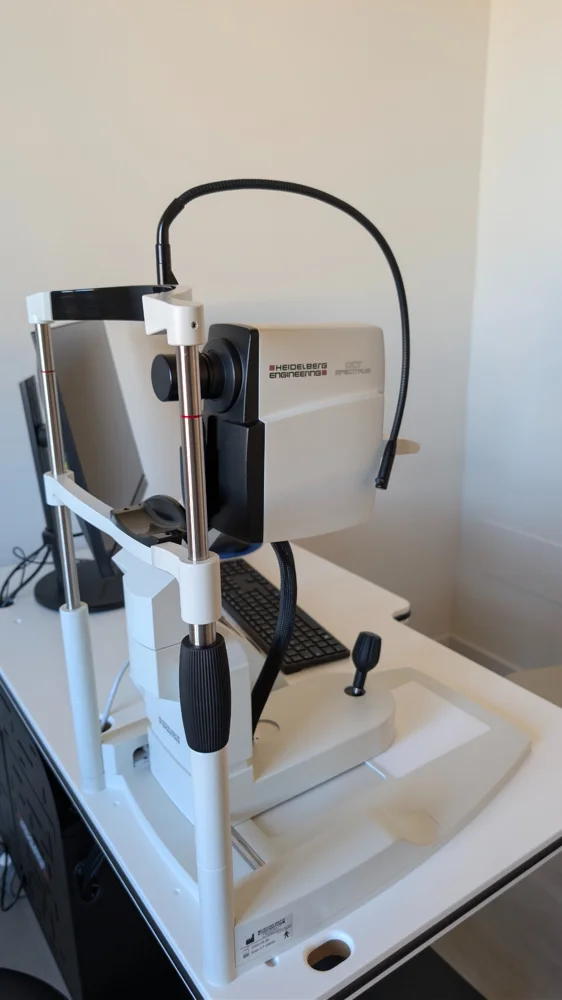
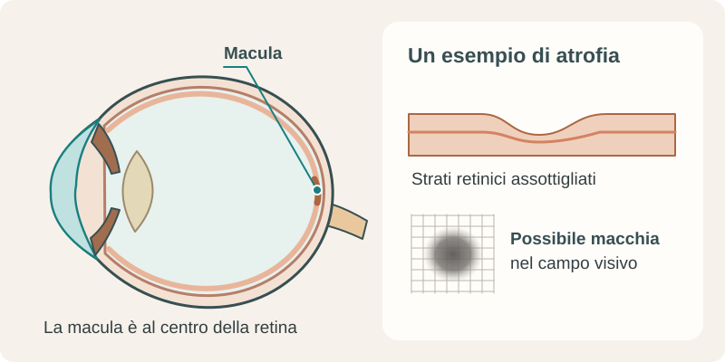

Quali cambiamenti osservare
Le maculopatie possono rendere difficile la lettura, deformare le righe dritte o creare una zona sfocata al centro dello sguardo. Se compaiono improvvisamente linee ondulate, una macchia centrale o un calo visivo, richiedi subito una valutazione oculistica urgente.
Come si esamina la macula
L’oculista valuta la vista e osserva il fondo dell’occhio, spesso dopo aver dilatato la pupilla. L’OCT usa la luce per ottenere immagini in sezione della retina. Il confronto fra esami aiuta a individuare cambiamenti e a programmare i controlli.
Quando si usano le iniezioni intravitreali?
Per la degenerazione maculare legata all’età nella forma umida e per molti casi di edema maculare diabetico, una cura frequente è l’iniezione di farmaci anti-VEGF all’interno dell’occhio. Questi farmaci aiutano a ridurre l’accumulo di liquido nella retina e a proteggere la vista.
Spesso servono più iniezioni. L’oculista valuta la risposta al trattamento con la visita e l’OCT e concorda con il paziente i tempi dei controlli e delle eventuali iniezioni successive.
Nella vita quotidiana

Domande frequenti
Perché portare gli OCT precedenti?
Confrontare le immagini aiuta l’oculista a distinguere alterazioni stabili e cambiamenti recenti.

